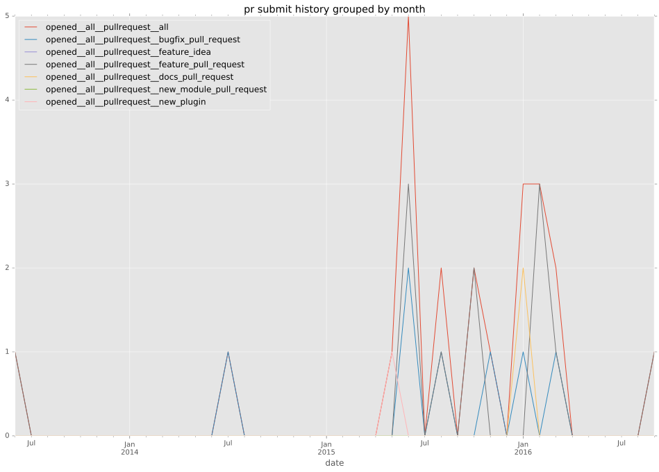

authors
- emonty
maintainers
- emonty
- nibalizer
contributors
- abadger : 1 commits
- s10 : 5 commits
- bcoca : 4 commits
- dalees : 1 commits
- resmo : 17 commits
- Jmainguy : 3 commits
- EmilienM : 10 commits
- emonty : 54 commits
- jimi-c : 1 commits
total issue counts
bugfix pull request: 10
pullrequest: 25
docs pull request: 2
feature pull request: 11
feature idea: 3
issue: 7
new plugin: 1
bug report: 5
issue history
pullrequest history

days open by issue type
feature pull request
count: 19
std: 88.8675997898
min: 0
max: 344
median: 1.0
mean: 45.6842105263
all
count: 50
std: 129.502854748
min: 0
max: 792
median: 1.0
mean: 41.52
pullrequest
count: 0
std: nan
min: nan
max: nan
median: nan
mean: nan
docs pull request
count: 4
std: 0.0
min: 0
max: 0
median: 0.0
mean: 0.0
bugfix pull request
count: 17
std: 6.62604042885
min: 0
max: 20
median: 0.0
mean: 3.17647058824
feature idea
count: 2
std: 9.89949493661
min: 8
max: 22
median: 15.0
mean: 15.0
issue
count: 0
std: nan
min: nan
max: nan
median: nan
mean: nan
new plugin
count: 2
std: 0.0
min: 8
max: 8
median: 8.0
mean: 8.0
bug report
count: 6
std: 322.491963724
min: 0
max: 792
median: 2.0
mean: 184.666666667
closures grouped by total days open